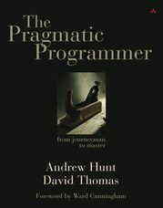
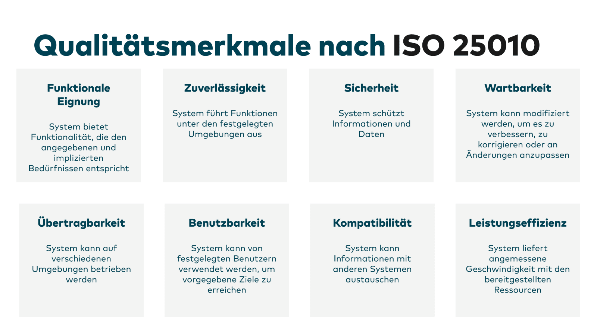

fun kotlin() = trueAgenda
- Motivation
- Wie?
- Warum?
- Kotlin
Motivation
Learn a language every year
Motivation
Besser streamen
findAllUsers()
.filter { it.activated }
.map { it.name }
.take(3)
.joinToString(",")
.let { println(it) }
Motivation
Moderne Sprache
fun someInts(): List<Int> {
val list: MutableList<Int> = mutableListOf(1, 2)
list.add(3)
return list
}
Wie?
Läuft auf der JVM-> Also auch standalone wie Java
- Kotlin Compiler als Java-Library
- Buildsystem: Maven, Gradle
- Buildartefakte: .class, .jar, .war (Java Bytecode)
Wie?
 Übertragbarkeit ✔️ Sicherheit ✔️ Kompatibilität ✔️ Portierbarkeit ✔️Warum?
- Wartbarkeit ✔️
- Nah an der Java-Sprache
- Moderner Sprachfeatures
- Aufgeräumte Syntax
- Interoperabilität
Syntax
fun main() {
println("Hello from Kotlin")
}
public class Main {
public static void main() {
System.out.println("Hello from Java");
}
}
Syntax
val zahl = 12
val andereZahl: Double
var veraenderlich = 1
veraenderlich = 2
fun getSomeValue(input: String): Double {}
final var zahl = 12;
final double andereZahl;
var veraenderlich = 1;
veraenderlich = 2;
double getSomeValue(String input) {}
Null-Safety
val name: String = "Kevin"
val nameOrNot: String? = "Kevin"
val nameOrNot: String? = null
String name = "Kevin";
Optional<String> nameOrNot = Optional.of("Kevin");
Optional<String> nameOrNot = Optional.empty();
Null-Safety
val length = nameOrNot.length
if (nameOrNot != null) {
val length = nameOrNot.length
}
val forcedLength = nameOrNot!!.length
if (nameOrNot.isPresent()) {
int length = nameOrNot.get().length();
}
int forcedLength = nameOrNot.get().length();
Null-Safety
// Person besteht aus Name?
val vorname = person.name?.vorname
// Person besteht aus Optional von Name
var vorname = person.getName().map(Name::vorname);
Null-Safety
person.name?.let { personName ->
println(personName)
}
person.getName().ifPresent(
personName -> {
System.out.println(personName);
});
Null-Safety
val myName: String = nameOrNot ?: "Max Mustermann"
var myName = nameOrNot.orElse("Max");
Types
class SomeClass(zahl: Int) {
constructor() : this(1)
private val zahl: Int = zahl
fun printIt() {
println(zahl)
}
}
- class
- data class
- enum class
Types
data class SomeDataClass(val zahl: Int)
class SomeOldDataClass {
private final int zahl;
private SomeOldDataClass(int zahl) {
this.zahl = zahl;
}
public int getZahl() {
return zahl;
}
@Override
public boolean equals(Object o) {
if (this == o) return true;
if (o == null || getClass() != o.getClass()) return false;
SomeOldDataClass that = (SomeOldDataClass) o;
return zahl == that.zahl;
}
@Override
public int hashCode() {
return Objects.hashCode(zahl);
}
}
record SomeDataClass(int zahl) {}
Types
interface SomeInterface {
fun printIt()
}
class SomeImplementation : SomeInterface {
override fun printIt() {
println("Hallo from Implementation")
}
}
interface SomeInterface {
void printIt();
}
class SomeImplementation implements SomeInterface {
@Override
public void printIt() {
System.out.println("Hallo from Implementation");
}
}
Types
https://www.youtube.com/watch?v=KvehHqnEXuc
Functions
Function in class
val obj = SomeObject("Kevin")
val objString = obj.greet()
class SomeObject(private val innerString: String) {
fun greet(): String {
return "Hallo $innerString";
}
}
Functions
Extension Function
val name = "Kevin"
val objMessage = name.greet()
fun String.greet(): String {
return "Hallo $this"
}
Functions
val firstFunction: (String) -> String
val upperCaseFunction: (String) -> String
firstFunction = ::takeFirstChar
upperCaseFunction = ::upperCaseChar
val result = upperCaseFunction(firstFunction("Apfel"))
Functions
val numberFunction: (Int) -> Int
fun doWith(number: Int, numberFunction: (Int) -> Int) {
val result = numberFunction.invoke(number)
println(result)
}
Functions
fun doWith(number: Int, numberFunction: (Int) -> Int) {
...
}
doWith(2, SquareFuncClass())
doWith(2, ::cubeIt)
doWith(2, { it - 1 })
doWith(2) { it - 1 }
Functions
https://www.youtube.com/watch?v=eXT1wglHAQoStreams
Funktional mit Funktionen und Lambdas arbeitenFeatures
InteroperabilitätFeatures
Operatorenhttps://kotlinlang.org/docs/operator-overloading.html
Features
PropertiesFeatures
DatenstrukturenFeatures
DesctructuringFeatures
ZeitmessungFeatures
https://www.youtube.com/watch?v=OFWMtmqocV8val (sprache, gelernt) = "kotlin" to true